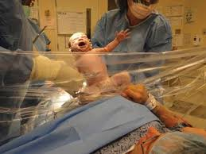
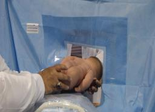

دكتور محمد محمد الحناوى
إستشارى العقم و النساء و التوليد
مصر دمياط رأس البر
الولادة القيصرية الطبيعية
Natural cesarean
عندما تكون هناك حاجة للولادة القيصرية
وخاصة مخطط لها مسبقا،
فالوسيلة هى الولادة القيصرية الطبيعية
هى طريقة جديدة للولادة القيصرية
تحاول أن تشابه الولادة الطبيعية فى كل خطواتها
-- لتقديم الأطفال في بيئة أقل إرهاقا
-- وتعزيز الرابطة بين الأم والطفل
-- مع تقليل مضاعفات أثناء و بعد الولادة
- الإضاءة خافتة
- درجة حرارة الغرفة متوسطة و ليست باردة
- تشغيل الموسيقى التى تفضلها أو تختارها الأم
- وجود فرد من العائلة مثل الزوج أو الأخت المدربة مسبقا (و هو يرتدى ملابس معقمة ) ليلمس الطفل مع الأم
- وضع أجهزة قياس الضغط و رسم القلب و تشبع الأكسوجين و النبض و إعطاء المحاليل و الأدوية بعيدا عن الذراع التى ستحمل بها الأم الطفل
- مع الإقلال من الوسائل التكنولوجية الحديثة
- التخدير نصفى أى المريضة واعية
- الأدوية الأخرى غير مخدرة أو تسبب دوخة و لا تذهب بالذاكرة
يمكن للأم أن تشهدا ولادة طفلها من خلال رفع رأسها (وخصوصا انها لن تكون قادرا على رؤية شق القيصرية بسبب موقعها )
مع وجود ساتر شفاف أو من خلال مرآة لعدم تلوث الجرح و ممكن بدون ساتر ؟
-بعد عمل شق القيصرية ( فى البطن و الرحم )
مع توجيه الأم للحزق أو بدون حزق
- الطبيب يساعد رأس الطفل بأن يخرجها من شق الرحم و البطن ويتركه حتى يخرج السائل الامنيوسى من الرئة ويلفح الهواء وجه فيتنفس
و مع قوة الكتف والجسم يتلوى و يتملص الطفل لمدة ممكن أن تصل إلى أربع دقائق و يوجه نفسه للخروج من الرحم لوحده تماما .
-أو يترك الطبيب الطفل يخرج بنفسه مع مساعدته ببطء مثل الولادة الطبيعية
- أو يولد الطبيب الطفل ببطء شديد
(مما يؤدى إلى الضغط على صدر الطفل و إفراغ المياة الموجودة فى رئته و المساعدة على إمتصاصها
-- و ايضا إنقباض الرحم مع إفراغه تدريجيا مما يؤدى إلى الإقلال من النزيف الحاد بعد الولادة)
- بعد ولادة الطفل الأم و الأب أول من يعرفا أو يتأكدا جنس مولودهما إذا لم يكونا يعرفا
- إعطاء الطفل لأمه ليلمس صدرها وذلك بواسطة ممرضة معقمة


لمس الجلد إلى الجلد فورا بمجرد ولادة الطفل تعزيز العلاقة في وقت مبكر من خلال وجود طفل رضيع على صدر الأم
(فالتلامس الجسدي بين الأم والطفل يساعد على تنظيم درجة الحرارة والتنفس وتنظيم معدل ضربات القلب، وزيادة التعلق للطفل
ويساعد أيضا على تنظيم مستويات هرمونات الأم
- لا داعى لوجود طبيب أطفال فى غرفة العمليات طالما الحالة مستقرة ويكفى ممرضة أطفال معقمة
- الطبيب يشرح للأم مايحدث من خطوات
- استخدام الشاش لمسح الطفل بالبكتيريا المفيدة بأن يَجْمع الطبيب مسحة مهبلية بوضغ شاشة معقمة فبل الولادة بنصف ساعة فى المهبل وبغد ولادة الطفل
يسحبها من المهبل ويَمْسحِ بها جلد ِالطفل الرضيعِ و فمه أو الخيار الآخر أَنْ يَأْخذَ المسحةً المهبلِية ويَمْسحُ على حلماتِ الأم َ قَبْلَ أَنْ ترضّعُ الطفل
من الثدى. عندما يَمْرُّ الطفل الرضيعُ بقناةِ الولادةَ أثناء الولادة المهبلية تُتعرّضُ إلى كثرة الجراثيمِ في فَمِّ الطفل الرضيعِ وعلى الجلد
ِ وهذه البكتيريا تُساعدُ على بناء microbiome صحّي للطفلَ الرضيعِ، الذي يُمْكِنُ أَنْ يُخفّضَ
خطرْ الأمراضِ التحريضيةِ مثل مرضِ كراونِ، مرض قلب، إصابات، ويُحوّلُ غيابُ هذه البكتيريا في الأطفال الرُضَّع القيصريينِ قَدْ يُوضّحَ لِماذا
أن الأطفال الرُضَّع القيصريينِ عِنْدَهُمْ نِسَبُ أعلى مِنْ الربو، حساسيات، سمنة، ومخاوف صحةِ أخرى.
- بعد توقف النبض فى الحبل السرى ( 60 - 90 دقيقة ) حتى لايحدث للطفل أنيميا وذلك لنقل الدم من المشيمة إليه
- يترك الأب يقطع الحبل السرى اذا سمحت الظروف
- ولادة المشيمة ببطء
- السماح لشخص إضافي أن يكون موجود لتصوير الولادة
- تجفيف و فحص و قياسات الطفل و هو فى حضن أمه
- إعطاء الطفل فيتامين كاف عضل و هو فى حضن أمه
- ترضع الأم الطفل من ثديها فورا
- تخرج الأم من العمليات والطفل معها
- هذه الطريقة تقلل من الألم بعد الولادة
- تقلل عصبية و إكتئاب الأم بعد الولادة
ملحوظة ليس مقاس واحد يناسب الكل
فممكن تغيير أى خطوة لمصلحة الطفل و الأم